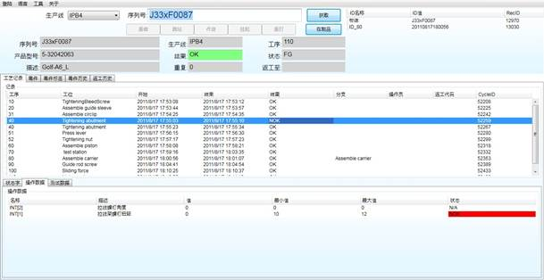

汉顺工艺控制及防错系统
离散制造行业的大中型企业，在企业生产中往往面临工人熟练度不足，良品率低，事故偶有发生，设备损坏等问题，如何通过信息系统解决上述问题，同时信息系统又能够灵活支持产线的多样化，充分利用信息化的优势，就成了许多一线生产管理人员面临的主要问题。
客户常常遇到下面的问题：
同一条生产线需要混合组装多种型号产品的时候，能否自动校验和操作提示以防止工人部件装配错误、产品生产流程错误、产品混装和货品交接错误？
如何实现产品零缺陷？
系统是否易于配置？
系统是否灵活，是否支持负责情况下的生产，例如，是否支持多产品混线生产，是否支持不同工位同时生产不同型号产品？
汉顺工艺控制及防错系统拥有工序配置、防错检查、防错校准、返工控制、换型支持、状态反馈等功能，成熟稳定。多条产线的实施经验表明，金蝶工艺控制及防错系统可以有效的为离散制造型企业解决以上问题。
